LLM 的参数规模仍在持续增长。尤其是混合专家（MoE）LLM 的出现——这类模型将许多专门的子网络（“专家”）与内置的专家门控机制结合起来——已将模型参数规模推高至数千亿甚至数万亿。虽然对某个输入而言只有一部分参数会被激活，但对如此庞大的模型进行推理，仍需要将工作负载分布到多个 GPU 上。
本章聚焦于使用现代 NVIDIA GPU 对这些超大规模 LLM 进行高效、高性能多节点推理的高级优化技术。我们将讨论如何利用硬件和算法创新设计分布式推理系统，以最大限度降低延迟并提高吞吐量。
首先讨论解耦式 prefill 与 decode（PD、disagg PD）架构。该架构将推理负载拆分成可独立调优的不同阶段。随后介绍面向推理的核心并行策略，包括数据并行、张量并行、流水线并行、专家并行和上下文并行，以及如何组合使用这些策略，在众多 GPU 上部署大型模型。
之后介绍推测解码方法，包括 Medusa、EAGLE 和 draft-and-verify 等方案。它们允许推理时生成并评估多个 token，而不是像传统自回归 LLM 那样一次只生成一个 token，从而缓解顺序解码瓶颈。我们还会讨论用于强制输出格式（例如自定义 JSON schema）的约束解码，以及面向 MoE 模型的动态路由策略，以提高专家门控和负载均衡效率。
如前所述，现代 LLM 的推理工作流包含两个不同阶段：prefill 和 decode。可以采用解耦式 prefill 与 decode 将二者分离，使 prefill 和 decode 集群能够独立扩展，甚至运行在不同硬件平台上，从而显著提高大规模 LLM 服务性能，本章后面会详细说明。
跨厂商或跨架构部署要求两端的 KV cache 布局和数据类型一致。实际生产系统应让 prefill 与 decode 使用兼容的 GPU 系列，从而采用相同数值格式，便于传输和复用 KV cache。
在 prefill 阶段，模型通过一次前向传播处理整个输入 prompt（通常包含数千、数万甚至数百万个 token），生成 LLM 计算出的初始隐藏状态，然后为输入 prompt 中的所有 token 填充注意力键值（KV）缓存。图 15-1展示了解耦式 prefill 与 decode 如何共享 KV cache，并将 KV 传输与计算重叠。
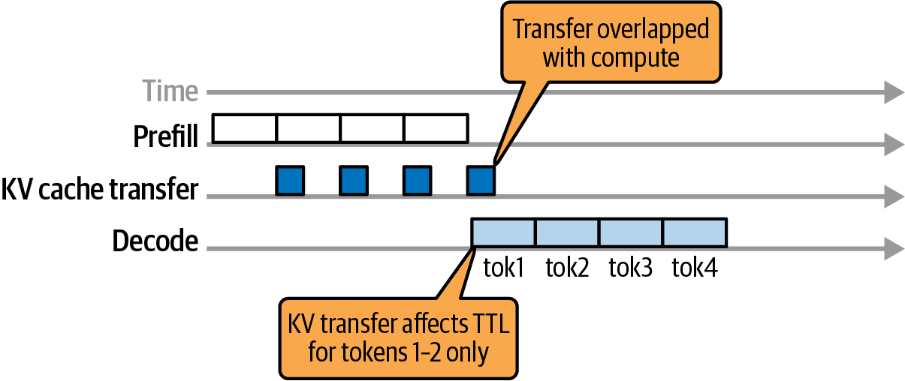
在 decode 阶段，模型通过自回归生成预测序列中的每个新 token，并使用所有先前已生成 token 的缓存注意力 KV 表示。
传统 LLM 推理系统会将这两个阶段部署在同一节点，并简单地将所有计算一起批处理。然而，这种朴素方法会产生通常所说的 prefill-decode 干扰。例如，长 prompt 的 prefill 会占用 GPU，延迟其他请求中对时间敏感的 decode 工作，反之亦然。
将 prefill 和 decode 部署在同一节点，迫使特征迥异的两个阶段共用一种调度和资源分配策略。Prefill 包含大型并行计算，而 decode 需要大量小型顺序计算。因此，系统要么优先保证其中一个阶段的性能，要么过度配置硬件以同时满足二者需求。
采用解耦式 prefill 与 decode 架构时，prefill 与 decode 阶段被分配到不同 GPU 池，从而消除两类负载之间的直接干扰。DistServe 系统报告称，在同时满足 TTFT 和 TPOT 约束时，解耦 prefill 与 decode 可使 goodput 最高提高 7.4 倍（在最高严格 12.6 倍的延迟 SLO 下）。这些数字来自特定实验配置，并非所有部署都能达到。
消除跨阶段干扰后，可以减少资源“空转时间”，避免 decode 任务被长时间 prefill 计算阻塞，反之亦然。这样 GPU 会花更多时间完成有用工作，减少空闲，从而提高利用率和给定延迟目标下的有效吞吐量（即 goodput）。
可以用一组专用节点处理 prefill、另一组处理 decode，从而分别扩展二者。两个集群仅在将编码后的 prompt 状态（即注意力 KV cache）从 prefill worker 传输到 decode worker 时通信，如图 15-2所示。
图中，独立的 GPU worker 分别处理 prefill 阶段的输入 prompt 和 decode 阶段的迭代式输出 token 生成。Prefill 阶段输出包含 prompt 的 KV cache，随后传输给 decode worker 以生成后续 token。
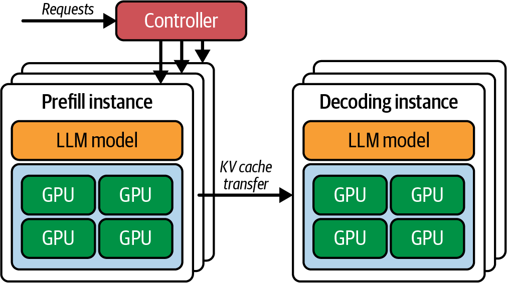
通过设置独立 GPU 池，系统可以让 prefill 和 decode 流水线并行保持忙碌。实践表明，在严格延迟约束下，解耦能够显著提高吞吐量。部分研究显示可能获得较大收益，但在拆分两个阶段后，实际结果从适度提升到 goodput 提高数倍不等，高度依赖工作负载和网络互连。
这种拆分允许针对吞吐量或延迟独立优化和扩展各阶段。可以在 prefill GPU 上激进地批处理，以最大化吞吐量，而不会拖累 decode 性能（例如增加 decode 延迟）。使用独立集群后，还可分别调节各阶段的并行设置、实例数量和调度策略。
Decode GPU 可以使用较小的批大小或专用调度，以尽量降低流式生成的每个输出 token 时间（TPOT）。例如，可以使用优先处理紧急 decode 任务的调度器，避免排队延迟。
这种拆分之所以有效，是因为两个阶段的性能目标不同。Prefill 阶段的首 token 时间（TTFT）针对低延迟优化，而 decode 阶段优先考虑较低的每输出 token 时间（TPOT）和稳定的流式延迟。端到端吞吐量主要由并发度和调度决定。传统部署必须在 TTFT 与 TPOT 之间折中；解耦则允许同时满足两个 SLO 目标。
在 KV 传输和 all-to-all 阶段监控 NVLink 与 NIC 利用率。目标是使用独立 stream 和 event 将拷贝与计算重叠。
KV 移交只增加较少延迟，因为多 GPU 和多节点传输使用高带宽互连，包括 NVLink、NVSwitch、InfiniBand，以及通过 GPUDirect RDMA 使用的以太网 RoCE。例如，配备 ConnectX-8 SuperNIC（800 GbE 级）的多节点集群，每个端口可提供最高 800 Gb/s 的 GPUDirect RDMA 带宽。与经由主机的通信路径相比，这能显著缩短 KV 传输时间。还建议每个 GPU 配置一个 NIC，以优化 prefill-decode 解耦并提高 MoE all-to-all 性能；实际收益仍取决于拓扑、消息大小和软件栈。
Prompt 处理完成后，解耦系统使用 connector或调度器，将 prompt 的中间结果（最终隐藏状态和 KV cache）从 prefill worker 传输到 decode worker。这种移交会产生一定通信开销，但如果集群采用 NVLink、InfiniBand 等高带宽互连，与消除资源争用带来的收益相比，开销通常较小。
实际使用中，NVIDIA NIXL 库会根据拓扑和策略，在 NVLink/NVSwitch、RDMA 或经主机暂存的路径之间自动选择，以尽量降低传输开销。例如，第 4 章介绍的 NIXL 会自动选择最快的可用路径传输 KV cache。NIXL 可与 Dynamo、vLLM 等框架和推理引擎集成，NIXL-vLLM 集成如图 15-3所示。
具体来说，LMCache 和 NIXL 已集成到 vLLM 的解耦式 prefilling 中，作为受支持的数据路径。NVIDIA Dynamo 和 TensorRT-LLM 也使用 NIXL，通过 GPU 点对点互连和 RDMA 传输 KV cache 数据。
在节点内部，NIXL 通过 NVLink 和 NVSwitch 执行设备到设备传输，无需经主机暂存。跨节点时，NIXL 通过 InfiniBand 或 RoCEv2 使用 GPUDirect RDMA，避免主机拷贝。即使负载达到数 GB，这些路径也能将 KV cache 移交延迟保持在较低水平，具体效果取决于拓扑和并发流量。
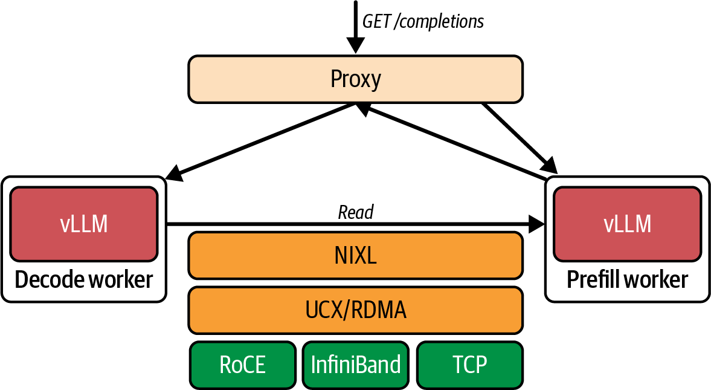
Prefill 与 decode worker 的放置应遵循互连拓扑。同节点放置时，可通过 CUDA peer access 让 KV 传输走 NVLink 和 NVSwitch；跨节点放置则应通过 InfiniBand 或 RoCEv2 使用 GPUDirect RDMA。NVIDIA Dynamo 与 NIXL 集成，可在跨节点的 GPU、CPU 内存和存储之间移动 KV cache；vLLM 则通过 LMCache 和 NIXL 实现解耦式 prefilling。
如果互连或虚拟化层阻止直接 peer access，NIXL 可能回退到经主机暂存的非最优路径。务必在实际部署中验证端到端 KV 传输时间。
在高级部署中，Kubernetes 等集群编排系统可以根据负载和输入特征动态调整 GPU 池分配，或分别横向扩展各个池。例如，大量用户提交超长 prompt、但输出较短时（如大型文档摘要），Kubernetes 可以临时为 prefill 池分配更多 GPU，同时减少 decode 阶段的 GPU 数量。
相反，如果大量用户请求超长输出（例如长推理链、“逐步思考”等），则可将更多 GPU 转移到 decode 池。两种情况下，都可以分别为各类 worker 横向扩展新实例。
图 15-4展示了一个基于 Kubernetes 的分布式 vLLM 集群，它使用开源 llm-d 项目运行独立的 prefill 和 decode worker。vLLM 通过运行两个实例，并使用 LMCache 和 NIXL 移交 KV，实现解耦式 prefilling；llm-d 则进一步提供 Kubernetes 原生编排，用于解耦式服务和 KV 感知路由。图中名为变体自动扩缩器的组件负责更新池中 prefill 与 decode worker 的副本数量。
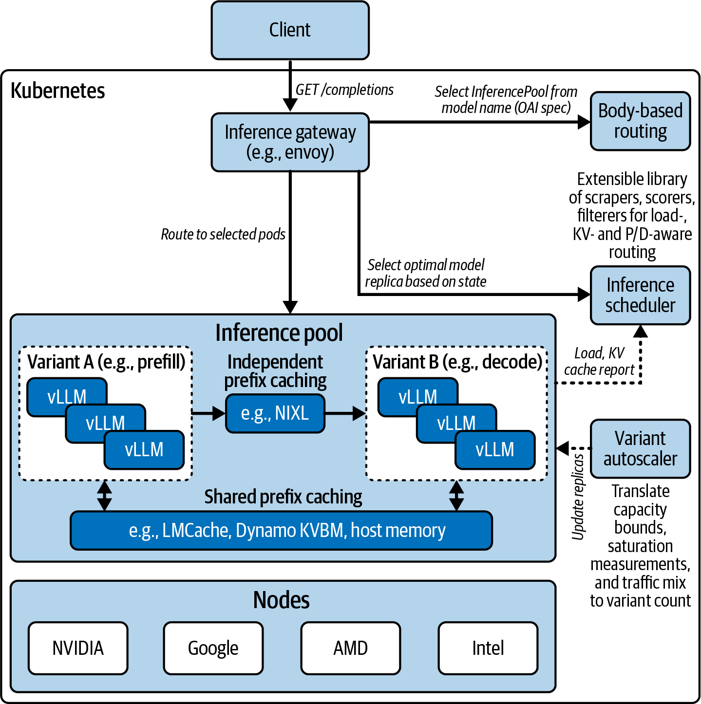
在现代推理部署中，所有节点通常共享同一运行时和代码库（例如 vLLM、SGLang、NVIDIA Dynamo），因此均可执行 prefill 和 decode。集群编排器可在启动时静态分配具体角色，也可在 worker 生命周期中动态调整角色。
总体而言，解耦式 prefill/decode 架构为高吞吐、低延迟 LLM 服务奠定了基础。不过，它也会增加复杂性：必须传输和管理中间数据，长 prompt 的 KV cache 可能达到数 GB，调度也更加复杂。但在超大规模场景中，提高硬件利用效率带来的收益很可观。
由于 GPU 内存有限，高效服务超大规模 MoE 模型需要多种并行形式。下面分解张量、流水线、专家、数据和上下文并行等关键策略，并讨论如何组合使用，在众多 GPU 上分布 LLM。表 15-1从高层汇总这些策略、典型用途及其在推理场景中的详细含义。
| 并行策略 | 划分依据 | 使用场景 | 优点 | 缺点 |
|---|---|---|---|---|
| 张量并行 | 层内划分（将神经网络权重矩阵拆分到多个 GPU） | 单个模型过大，或需要通过多个 GPU 加速层内重计算 | 计算受限层可能接近线性加速 将 all-reduce 通信与计算重叠可减少开销 |
每层都需要频繁通信（all-reduce） 需要高带宽互连（NVLink/NVSwitch） 跨节点或慢速网络因高延迟而效率较低 （建议将张量并行组限制在单个节点内） |
| 流水线并行 | 不同 GPU 放置不同层（按层序列切分模型） | 无法装入单个 GPU 的超深模型 跨层扩展内存容量 |
允许分布模型状态 使用微批处理，并发处理来自不同用户/请求的多个 token 对于长序列可并行处理多个层（提高大批次或长输入的吞吐量） |
增加流水线填充/排空延迟（bubble），对逐 token 解码帮助不大 实现更复杂，激活内存占用更高（必须在流水线阶段之间保存中间激活） |
| 专家并行 | 不同专家放置在不同 GPU（每个 token 稀疏激活） | 包含大量专家的超大规模 MoE 模型 需要在 GPU 之间分片模型参数 |
模型规模可随 GPU 数量扩展，总参数量几乎不受单卡容量限制 每个 GPU 只计算部分 token（稀疏计算） 较高参数量可提升模型容量/质量 |
每个 MoE 层都有较高运行时通信开销（all-to-all） 门控不均匀时可能出现负载失衡 每个 GPU 上每位专家必须有足够 token，才能摊薄通信成本 |
| 数据并行 | 在多个 GPU 上复制完整模型，每个副本处理不同请求 | 模型部署固定后横向扩展吞吐量（增加并发请求） 面向大量用户的多实例服务 |
吞吐量可能接近线性扩展 实现简单（无需切分模型） |
无法改善单个查询的延迟（即每查询延迟） 成倍增加内存用量（每个副本占用完整模型内存） 有状态服务（例如缓存）必须处理一致性，或采用无状态模型调用 |
| 上下文并行 | 在每一层将输入序列 token 划分到多个 GPU | 超长序列（例如 10 万以上 token），用于降低 prompt 延迟和每 GPU 内存占用 | 长上下文 prefill 可能接近线性加速 通过拆分 KV cache，处理超过单个 GPU 内存容量的上下文 |
需要自定义注意力算法处理跨分区注意力 每层都为边界 token 增加通信 由于存在额外通信开销，通常只对超长上下文（10 万以上 token）有益 |
在 Blackwell NVL72 上进行节点内 TP 时，优先将 TP 组限制在单个 NVSwitch 域内；仅在拓扑允许且不会引入过多额外跳数时扩展到机架间。
这些并行策略定义了如何在 GPU 之间拆分模型权重和数据。图 15-5展示了不同并行策略以及常见策略组合的拆分方式。
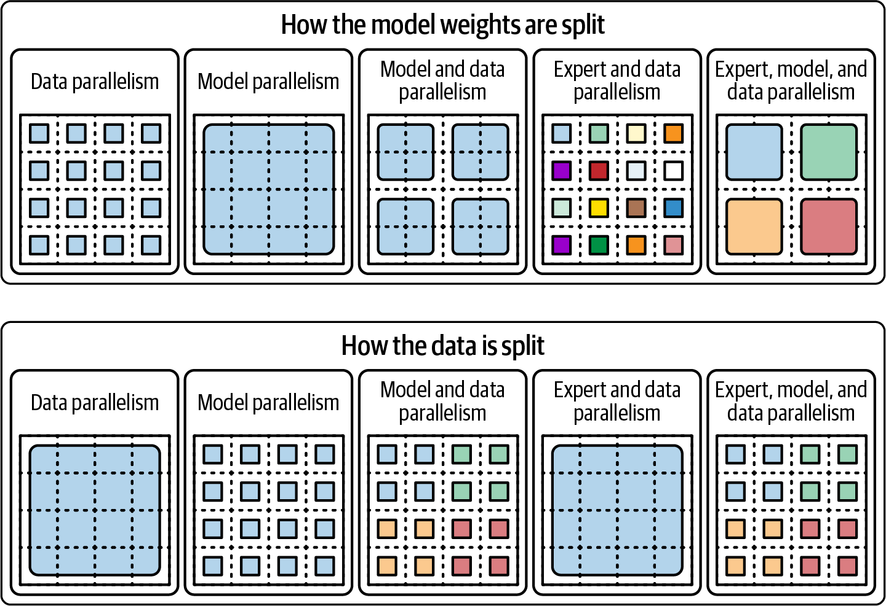
张量并行（TP）将神经网络每一层内部的计算拆分到多个 GPU。例如，transformer 层中的大型矩阵乘法可以按列或按行划分，在两个或更多 GPU 上并行计算；随后这些 GPU 通过 all-reduce 交换并聚合各自的部分输出。
当模型层（即隐藏层）过大、无法装入单个 GPU 内存时，通常会使用 TP；也可以让多个 GPU 并行计算同一层，以加速单个模型实例。每层计算期间所有 GPU 必须保持同步，因此高效运行需要极高的 GPU 间带宽。
理想情况下，TP 运行在通过高带宽 NVLink 和 NVSwitch 互连的 GPU 上。在使用第五代 NVLink 的 Blackwell 多 GPU 系统中，GPU 间聚合双向带宽最高可达 1.8 TB/s；TP 可在 8–16 GPU 节点内扩展，在 NVL72 机架中甚至可覆盖 72 个 GPU。GB200/GB300 NVL72 的 NVLink Switch 在 72-GPU 域内提供约 130 TB/s 聚合 GPU 带宽。上述均为平台级峰值或聚合规格，实际应用带宽取决于通信模式与拓扑。
只要激活 all-reduce 等集合通信相对于计算足够快，TP 就可能使模型中计算受限部分接近线性加速。在推理中，张量并行主要应用于注意力投影和前馈多层感知机（MLP）网络中的大型矩阵乘法。
单个 token 的激活相对较小，因此在 NVLink 上执行这些 all-reduce 的成本通常不高。由此，TP 成为在不近似模型权重的情况下，将超大稠密模型拆分到多个 GPU 的常见策略。
TP 主要用于单个 MoE 专家或 transformer 层过大、无法装入单个 GPU 的模型；也可通过在多个 GPU 上并行执行每层计算来降低延迟。
不过，超过一定规模后 TP 效率会下降，尤其是通过 InfiniBand 或以太网跨节点、跨机架使用时。实践中，最好将 TP 用于节点内通信，或限制在同一 NVLink 域内的节点之间。
NVIDIA GB200/GB300 NVL72 等现代多 GPU 机架允许在更大范围内使用 TP。NVLink Switch 将单个 NVL72 的 NVLink 域扩展到 72 个 GPU；相关系统架构还可跨最多 8 个机架、共 576 个 GPU 构建互连。理论上可以形成极大的 TP 组，但“576 路 TP”并不意味着高效：all-reduce 延迟、拓扑层级和模型粒度通常会使收益提前递减，必须按实际系统验证。
虽然 TP 可以跨机架扩展，但选择 TP 组大小时应考虑拓扑，并尽可能将其限制在单个 NVLink/NVSwitch 岛内，以避免不必要的机架间交换延迟并提高系统整体效率。
流水线并行（PP）按层将模型划分到不同 GPU。例如，在一个 60 层 transformer 模型中，GPU 0 可保存第 1–20 层，GPU 1 保存第 21–40 层，GPU 2 保存第 41–60 层。
处理 token 序列时，数据按顺序流经各 GPU：GPU 0 计算第 1–20 层，然后将中间激活传给 GPU 1 计算第 21–40 层，依此类推。这样便可分布无法装入单个加速器的超深模型。
推理中，PP 可以像装配线一样，通过微批次在各流水线阶段间交错执行来提高吞吐量。在处理长输入序列的 prefill 阶段，可将不同微批次错峰送入各层，提高 GPU 利用率。
相比之下，在一次生成一个 token 的 decode 阶段，纯 PP 收益较小，因为每个新 token 仍必须依次通过所有流水线阶段。这会产生流水线 bubble（空闲期）：对于每个 token，前面的阶段都要等待后面的阶段完成。
为了减少流水线 bubble，实现通常采用微批处理，让流水线并发处理来自不同请求的多个 token。尽管如此，流水线并行的主要价值仍是内存扩展，即允许超大模型将不同层分布到多个 GPU；它也有助于提高吞吐量，尤其适合大批次或长输入。
由于流水线阶段之间存在传输开销，PP 往往会增加单个请求的端到端延迟。因此，选择 PP 通常是出于模型容量而非延迟考虑：当单个 GPU 无法容纳整个模型时，以一定延迟代价换取模型可装入内存。
PP 还经常与 TP 等并行策略组合，以平衡内存和速度。服务大型 MoE 模型时，可以在 2–4 个 GPU 上使用流水线并行拆分深层堆栈，同时依靠 TP 处理宽大的层内计算；具体规模应由拓扑和性能分析决定。
专家并行（EP）专用于 MoE 架构。MoE 层包含许多专家网络，即前馈子层；每个输入 token 只激活一个或少数几个专家，因此天然适合把不同专家分布到不同 GPU。
例如，某个 MoE 层有 16 位专家、系统有 4 个 GPU，则每个 GPU 可承载 4 位专家。推理时，token 到达该 MoE 层后，内部门控网络可以为其选择排名最高的两位专家。随后 token 数据被发送到承载这两位专家的 GPU 处理，再合并结果以生成下一个 token，如图 15-6所示。
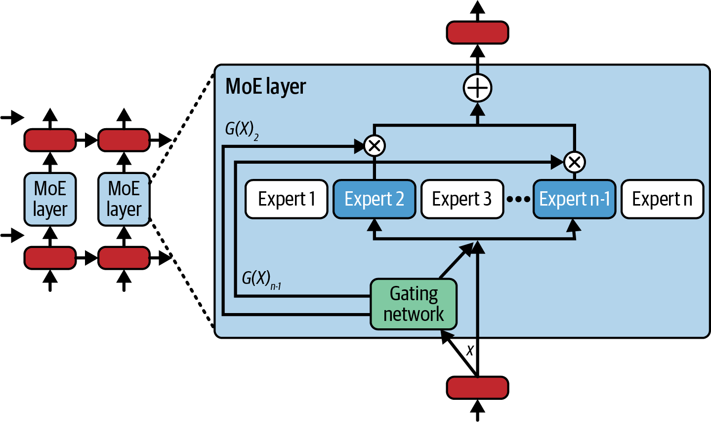
实现这一过程需要采用 all-to-all 通信模式，在 GPU 之间动态重排 token（严格来说是它们的激活向量），使每个 token 到达其指定专家所在的 GPU。每位专家为分配给自己的 token 计算输出后，再执行一次 all-to-all，将 token 输出恢复到原始顺序。
这种动态路由会在每个 MoE 层引入通信密集步骤。如果不仔细优化，它可能成为性能瓶颈，尤其是在专家/GPU 数量增加时。好处是专家并行可以使模型总容量随 GPU 数量近似扩展。
假设一个 MoE 有 100 位专家，分布在 100 个 GPU 上。如果每个 token 只激活两位专家，则每 token 的计算量与较小的稠密模型相近。专家并行使某些超大 MoE 模型得以实际部署，因为模型权重被分片到众多 GPU，而每个 GPU 在任一层只处理部分 token。
在大规模且专家负载均衡良好的 MoE 模型中，所有专家很可能同时处于活动状态。虽然单个 token 只激活少数专家，但汇总所有终端用户的全部 token 后，所有专家都会工作，并发消耗和争用 GPU 资源。
高效的专家并行推理需要精细的负载均衡和高带宽互连，例如机架内使用 NVLink/NVSwitch，节点间使用 InfiniBand/RDMA。现代 MoE 推理框架采用 NCCL 等高速集合通信库。将多位专家组合放在每个 GPU 上，通常有助于减少通信步骤。
现代 MoE 推理经常使用 top-2 门控，即为每个 token 分配两位专家。为了减少通信，可以将经常配对的专家放在同一 GPU 或计算节点。例如，把频繁共同被选中的两位专家放在同一 GPU 或节点上，可使许多 token 分配保持在本地，从而局部化通信流量并降低开销。
另一种方法是使用 top-1 门控，每个 token 只路由到一位专家。与会产生两份专家输出的 top-2 门控相比，这能减少通信量。Top-1 门控速度更快，但可能降低模型质量并导致负载不均。
Google GLaM 引入了负载均衡损失（以及门控噪声），以便在 MoE 模型训练期间均衡使用专家。在此基础上，研究人员正在探索真正自适应的推理时门控：当某位专家过载时，利用实时负载指标重新路由 token。这类方法旨在不降低质量的情况下提高利用率，但效果需按模型验证。
不过，在大多数生产服务环境中，采用适度 capacity factor 的 top-2 门控，并偶尔根据负载交换或复制专家，仍是兼顾质量与性能的常见折中方案。
许多 MoE LLM 至少使用 top-2 门控，以兼顾质量、速度和负载均衡。此外，还应合理放置专家，甚至使用备用专家副本，以避免专家过载。
当专家过载或成为热门专家时，如果门控网络不成比例地将 token 路由给它们，就会形成吞吐量瓶颈。所谓拖尾效应，是指系统必须等待所有专家计算完成后才能继续。因此，接收工作（token）多于其他专家的过载专家会阻塞推理流水线；等待期间，一些专家及其 GPU 会处于空闲状态。
为了防止这种情况，高性能 MoE 服务系统会提供 capacity factor 参数，常见设置为平均 token 负载的 1.2–1.5 倍，用于限制每位专家在每个批次中可处理的 token 数量。超出部分会被路由到第二选择的溢出专家，或排队等待第二轮处理。这与训练期间使用的负载均衡损失或门控噪声相互补充，后者用于鼓励 MoE 将 token 均匀分配给专家。具体取值应按工作负载调优。
一些功能完整的推理服务器还可在必要时将热门专家复制到多个 GPU，以分摊负载，但代价是消耗额外 GPU 内存。稍后会看到一个负载失衡示例。
结合推理时溢出（capacity factor）、训练时惩罚（负载均衡损失和门控噪声）以及热门专家副本，可以在容量达到上限时平滑 token—专家负载分布，从而提高整体 MoE 推理吞吐量。
在推理中，数据并行（DP）是指在多个 GPU 上复制完整模型，并将不同传入请求或请求批次的不同分片分配给各 GPU。训练数据并行通过梯度平均保持模型同步，而推理数据并行让每个副本独立执行前向传播。这是横向扩展吞吐量最简单的方法。
例如，如果一个 GPU 每秒可处理 10 个请求，那么在请求相互独立且没有其他瓶颈的理想情况下，8 个 GPU 上的 8 个副本可达到每秒 80 个请求。实际使用推理数据并行时，需要启动多个模型服务引擎，并在它们之间对请求进行负载均衡。
使用 DP 时，每个 GPU 或 GPU 组从头到尾处理一部分查询。由于各副本彼此独立，推理期间通常不需要为模型计算进行跨副本 GPU 通信，吞吐量可能接近线性扩展；但它也有显著缺点。
DP 会成倍增加内存需求，因为每个副本都需要完整的模型权重和缓存。因此，与单 GPU 承载模型相比，使用 8 个副本会占用约 8 倍 GPU 内存，硬件成本也大致增加到 8 倍。
实践中，数据并行通常与请求批处理和每 GPU 多 stream 执行结合，以最大化利用率。每个副本最好保持无状态，或使用适当的一致性/亲和路由机制管理缓存，避免一致性问题。
需要注意，DP 不会降低单个请求的延迟；但在内存和计算资源充足且争用较少时，更多副本可同时处理请求，从而提高吞吐量。
GPU 内存相对稀缺且昂贵，因此推理 DP 通常只在吞吐量需求很高，或能与 TP、PP 等其他并行方式结合时才值得采用。
由于 DP 会增加内存和成本，推理中常将它与 TP、PP 等方式组合。例如，若模型因内存限制必须分布到 8 个 GPU，可将 DP 与 TP、PP、EP 中的一种或多种结合，形成所谓四维并行；再加入上下文并行（CP），则可称为五维并行。
具体而言，可以结合 DP 和 TP，使用两个各含 8 个 GPU 的 DP 组部署两个大型模型副本，并在每个副本内通过 TP 将层内计算分片到 8 个 GPU。在没有其他瓶颈的理想情况下，两个副本可使吞吐量接近翻倍。
在大规模推理集群中，可以投入大量 GPU 和节点，运行大型模型的多个副本以处理高请求量。当吞吐量需要超过单个模型实例的能力时，DP 尤其有用。生产系统常运行多个大型模型 DP 副本来满足流量需求。
现代推理服务器通常把每个副本视为负载均衡器后的独立模型实例。虽然需要仔细进行请求路由，但与复杂的模型分片方法相比，这种方式相对直接。
上下文并行（CP）是一种更专门的策略，将单个 token 序列拆分到多个 GPU。它适用于包含数万乃至数百万 token 的超长上下文；否则，这类输入可能速度过慢、内存开销过大，甚至无法装入单个 GPU。
CP 的思路是将序列切分成多个块，让不同 GPU 在每一层并行处理序列的不同部分；GPU 只在序列块边界交换必要信息。
CP 通过在多个 GPU 上拆分 KV cache，处理超过单 GPU 内存容量的上下文。它还可能利用多个 GPU 并行执行长上下文 prefill，降低 prompt 处理延迟。在计算与通信条件有利时可接近线性加速，但并非简单与 GPU 数量成正比。
CP 的难点在于 transformer 具有全局自注意力，每个 token 都会关注此前所有 token。若简单拆分序列，为计算跨分区边界的注意力，GPU 之间需要交换大量信息。
CP 方法采用环并行、分块注意力等方案，降低自注意力通信成本，并使每个 GPU 主要处理自己上下文分区内的注意力，仅交换少量块边界数据。具体复杂度取决于所用算法，不能笼统保证消除二次复杂度。
实际上，每个 GPU 在每层处理输入序列中的一部分位置，并以流水化方式传递中间结果，常组织成环。CP 类似流水线并行，但它沿序列长度维度而不是层维度拆分。
上下文并行适合超长输入的 prefill：将文档切成片段，分配到多个 GPU 并发处理。GPU 数量翻倍时，prompt 处理时间在理想情况下可能接近减半，但跨片段注意力、通信和负载不均都会带来额外开销。
简而言之，CP 无法加速逐 token 的顺序 decode 阶段，但可以缩短超长 prompt 的 TTFT。它把注意力 KV cache 分布到多个设备，让每个 GPU 只存储自己片段的缓存，也使系统能够处理超过单 GPU 内存容量的上下文。
实际服务超大规模 MoE LLM 时，会组合使用前述多种并行策略。现代 LLM 规模庞大且结构复杂，单一并行方法往往不足。图 15-7展示了使用 4 个 GPU 的混合并行配置。
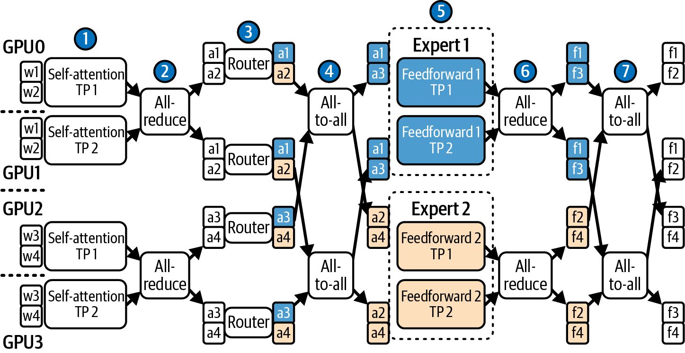
这里使用 4 个流水线阶段（每个 GPU 一个）和 2 路张量并行，并通过专家并行将 token 路由到两位专家。这称为 4 × 2 EP 混合并行策略。
还可以进一步扩大规模并创建 GPU 逻辑组。例如，对于包含 64 个 GPU 的集群，可将其分成 16 组，每组 4 个 GPU。假设 MoE 有 60 层和 64 位专家，可以使用 4 路流水线并行，每个阶段 15 层，从深度方向拆分模型；随后在每个阶段（15 层）内部采用 2 路 TP，拆分每层中的重型矩阵乘法，从宽度方向拆分模型。
对于 MoE 层，可以使用 EP，在每个组内分布 16 位专家，并采用 top-2 门控，使 token 最多发送到组内两个 GPU。最后，数据并行可以部署两个这样的 64-GPU 副本，以提高系统吞吐量；是否能够翻倍仍取决于负载均衡和共享基础设施瓶颈。
这只是一种配置。实际部署中，需要试验不同的并行策略组合，并借助性能分析工具寻找适当平衡。可以用 Nsight Systems 获取端到端追踪，用 Nsight Compute 查看特定内核的 GPU 指标。
每次更改前后，都要验证互连流量、Tensor Core 利用率及其他性能机制。
指导原则是使用 TP，直到收益开始递减，通常限制在单个节点或 NVL72 机箱等紧耦合单元内。随后只使用足以让模型装入内存的最少流水线并行；再尽量利用 EP，将 MoE 参数分布到专家和 GPU。最后，随着终端用户和并发推理请求增加，添加数据并行副本提高吞吐量。如果预计会有超长输入，还可以叠加 CP。
并行方式还应与硬件拓扑对齐。例如，在 NVL72 系统中，72 个 GPU 通过 NVLink 和 NVSwitch 组成统一高速互连域，可以在该域内构建 TP 和 EP 组。但当 TP 组接近整个域规模时，all-reduce 延迟往往导致收益递减，因此许多生产系统即使在 NVL72 内也会采用更小且拓扑感知的 TP 组。
相比之下，由 InfiniBand 连接的两个 8-GPU 节点，通常只有节点内部具备完整 NVLink 连接，跨节点流量需要经过 InfiniBand。在这种环境中，最好将 TP 限制在每个 8-GPU 节点内，并在可能时避免让高频层内集合通信跨节点，以规避更高延迟和较低有效带宽。
下面几节将讨论可与这些并行策略结合的更高层优化，以进一步加速多节点集群推理。设计良好的服务系统会组合多种高层和低层技术。
LLM 推理的基本性能挑战之一是解码的顺序性。Prefill 处理完初始 prompt 后，模型通常一次生成一个 token；每个 token 的计算依赖上一个 token 的结果，因此本质上是难以并行的串行过程，即使使用最新、最快的 GPU 也会形成延迟瓶颈。对于超大模型，在现代 GPU 上顺序生成数百个 token 仍可能耗时数秒，具体取决于模型、批次和硬件。
本节讨论几种加速 decode 阶段的技术。有些方法在每个推理步骤生成多个 token，另一些则直接减少顺序推理步骤的总数。
传统推测解码将一个小而快的“draft”模型与更大的“target”模型配对：draft 模型在一个批次中提出多个 token，target 模型再验证各候选项。它用额外一次推理过程换取并行生成，以提高多 token 吞吐量。不过，运行两个独立模型会增加部署复杂性；当验证过程成为瓶颈时，推理仍可能停滞。
Medusa 通过直接在单个 LLM 上附加多个轻量级解码头来简化这一流程。每一步中，这些解码头使用基于树的注意力机制，在一次前向传播内并发生成并验证多个 token 候选。
Medusa 的统一设计避免跨模型 token 传输，并将 draft-and-verify 合并到单模型过程。它可能在保持生成质量的同时获得可观提速，但实际收益取决于接受率、批大小和硬件。下面仔细介绍这些技术。
推测解码通过让小模型执行额外工作，节省昂贵大模型的时间。其思路是在主 LLM 旁运行一个轻量级“draft”LLM；draft 模型速度更快，会基于当前上下文推测生成一批 k 个 token。
随后，大模型（称为 target 模型）在发送给 GPU 的单个批次中，为整个 k-token 序列预测下一 token 概率，从而验证 draft token。一次处理全部 k 个 token，可以让 target 模型在每字节传输数据上执行更多计算，提高算术强度并更高效地验证 draft 序列。
如果 target 模型输出与 draft 模型提出的 k 个 token 一致，就相当于在大模型通常生成一个 token 的时间内生成了 k 个 token。如果大模型验证在序列中某个位置开始与 draft 预测不一致，则丢弃该位置之后的推测 token。标准验证过程每一步至少会保留一个由 draft 或 target 模型确定的 token。
使用 target 模型修正后的 token 并继续解码后，即可从该位置开始新的推测解码周期。图 15-8展示了小型 draft 模型提前预测多个 token，再由大型 target 模型验证这些 token。
总体来看，推测解码减少了大模型逐个 token 顺序调用的次数。理论上，上限与 draft 模型每次生成的 k 个 token 有关；实际由于额外开销和推测 token 被拒绝，提速通常远低于 k 倍，常见实验结果约为 2 倍，但并非普遍保证。
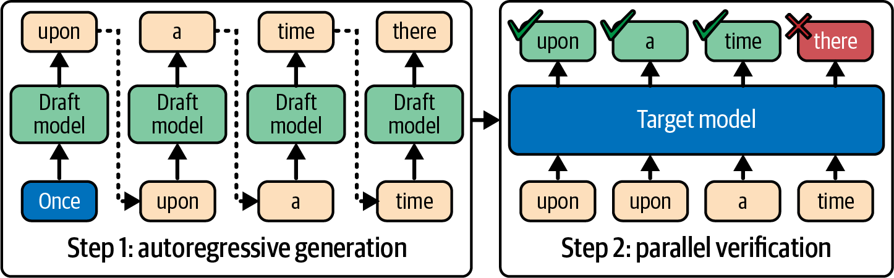
所选 draft 模型必须与大模型输出分布具有较高一致性，即其预测应与大模型的高概率输出高度重叠。如果 draft 经常猜错，推测解码收益很小且会浪费计算；如果它频繁预测 target 模型不会选择的 token，大量推测 token 会被拒绝，同样浪费计算时间。
Draft 模型还必须显著快于大模型；原文给出的常见经验是至少约 4 倍，推测解码才更可能获得实际性能提升。常见策略是使用主模型的蒸馏版本，或在相同数据上微调、输出相关性较高的小模型。具体阈值取决于接受率和部署开销。
Draft 模型必须与大模型使用相同的 tokenizer 和词表。这一点有时会被忽略，从而导致较差结果。
Draft 模型使用相同 prompt 生成 token，也可能采用不同温度设置来改变候选多样性；但温度必须与接受/校正算法一致，不能简单假定更高温度必然提高匹配率。与此同时，target 模型向前推进，在一个批次中处理全部 draft token。
在标准推测解码接受程序下，只要采样设置和校正过程一致，就会保持 target 模型的输出分布，因此最终样本与大模型分布相符。如果 draft 偏离，target 模型验证会拒绝相应 token，从而保持正确性。区别在于，小模型正确猜中推测 token 时，可以减少 target 模型的顺序调用次数。
推测解码有多种实现方式。vLLM、SGLang、TensorRT-LLM 等现代 LLM 推理引擎通常内置了协调 draft 与 target 模型生成的支持。部分实验中常见约 1.5–2.5 倍提速；通过谨慎设计批处理和 draft 模型可能获得更高收益，但结果依模型、负载和硬件而异。
在 PyTorch 中，torch.nn.functional.scaled_dot_product_attention 会根据设备代际、形状、mask 和 dtype 自动选择可用后端（例如 FlashAttention 或 cuDNN 内核）。可以使用 torch.nn.attention.sdpa_kernel() 并指定 SDPABackend 类型来固定后端。对 LLM 解码进行基准测试时，应验证预期的融合后端确实已启用。
例如，用于提高 LLM 效率的外推算法（EAGLE）不在 token 层，而是在特征层重新设计推测解码。EAGLE 对大模型自身的中间表示进行一步外推，以预测下一个 token 的特征，旨在降低不确定性并提高接受率。
EAGLE 论文报告称，在使用 4-token draft 时，相比普通解码最高获得约 3.5 倍提速，同时保持大模型输出分布。在有利实验环境下，它接近相应 draft 深度的理论上限。这表明推测解码可以进一步缩短解码时间并保持输出质量，但该数字是特定评测结果。
EAGLE-2 通过引入上下文感知的动态候选草稿树扩展 EAGLE。EAGLE 在部分评测中相对普通解码最高提速 3.5 倍；EAGLE-2 根据任务和模型，报告称比 EAGLE 约快 20%–40%。其 draft 模型会生成具有分支的 token 序列集合，进一步提高验证步骤的并行度，如图 15-9所示。这些均为特定论文评测结果。
EAGLE-3 偏向直接预测 token 并融合多层特征，在 EAGLE-1 和 EAGLE-2 基础上继续改进。EAGLE-3 报告称，在某些任务中相对 EAGLE-2 最高提升 1.4 倍，相对未优化基线变体最高提速 6.5 倍。EAGLE-1 和 EAGLE-2 的 draft 模型先预测内部特征向量，再将其解码为 token；本质上是猜测内部特征后映射到 token。上述性能数字同样来自特定评测。
EAGLE-3 跳过显式的特征级预测步骤，更直接地预测 draft token。不过，它仍会使用内部特征，并融合低层、中层和高层的多层表示来引导 draft 预测，而不是只使用顶层。这使流程更精简、约束更少，并有利于扩展。
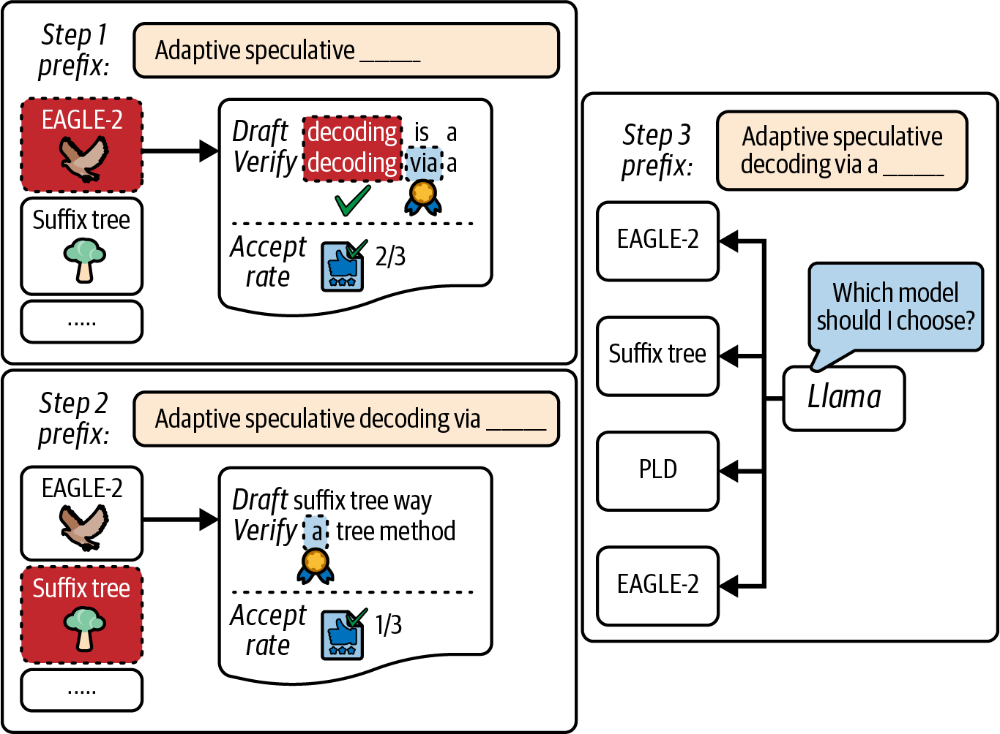
另一种技术是动态深度解码，它会自适应跳过对输出质量影响较小的层。其他减少计算的方法包括跳过每第 N 个 transformer 层、让 draft 模型使用较低精度（例如 FP8 和 NVFP4；原文的“FFP8”疑为笔误），以及在 draft 阶段临时使用较小的隐藏维度。
一些研究原型提供跳过部分网络或在解码时降低精度的模式，以准确率换取速度。截至本书撰写时，这些模式尚未普遍用于生产模型，因此启用前务必在目标任务上验证质量和速度。
推测解码的另一种方法完全不使用外部 draft 模型，而是让大型 target 模型通过选择性跳过部分计算，既生成自己的草稿，又验证输出。这种方法称为自推测解码，也称 draft-and-verify 方案。
在自推测解码中，大型 target 模型先通过快速近似过程生成 k 个 token。例如，它可以针对每个新 token 只运行一半层（隔层跳过），并可能使用较低精度，从而像小型 draft 模型一样产生草稿输出。当接受率和草稿深度有利时，可能获得相近提速；原文提到约 2 倍，但这取决于具体实现和负载。
在自推测解码的第二阶段，target 模型执行完整前向传播，一次验证这 k 个 token。如果全部匹配，就节省了 draft 阶段未执行层的计算；如果不匹配，则接受不一致位置之前的 token，并按标准接受/校正流程继续。
由于同一模型同时负责生成草稿和验证，自推测解码无需训练、维护或在运行时加载独立模型。难点在于如何通过丢弃层、降低精度等方式减少 draft 阶段的计算量，同时又不过度损害准确率。
相关技术还有一致性解码，即训练一个 LLM 同时生成并验证多个 token。该单模型方法在特定实验中无需独立 draft 模型便获得约 3 倍提速，体现了将推测解码能力融入模型自身权重的趋势。
这些方法仍是非常活跃的研究领域。它们尝试利用模型内部冗余让模型自行加速；由于优化局限在模型内部，还可能简化推理引擎的外部协调逻辑。
传统推测解码最终仍由 draft 模型逐个生成 token，只是因为 draft 模型较小而更快。Medusa 则采用更彻底的方法：修改模型架构，使其在每个解码步骤并行预测多个新 token。
双模型推测解码仍是逐个生成 token，只是速度更快；Medusa 架构则真正由单个模型在每次迭代生成多个 token。已发表实验中，Medusa-1 和 Medusa-2 的多头方法报告约 2.2–3.6 倍提速，实际收益依模型和服务配置而异。
不过，Medusa 需要自定义模型训练，因为它会修改 transformer LLM，在某些层分出额外解码头，因此得名 Medusa。这些解码头让模型能够同时提出多个后续 token。
不同 Medusa 头生成的多个 token 候选组成树形结构。例如，Medusa 可以在一次处理中生成深度为 2 的二叉树，产生最多 4 个候选 token，然后并行验证多 token 序列，如图 15-10所示。
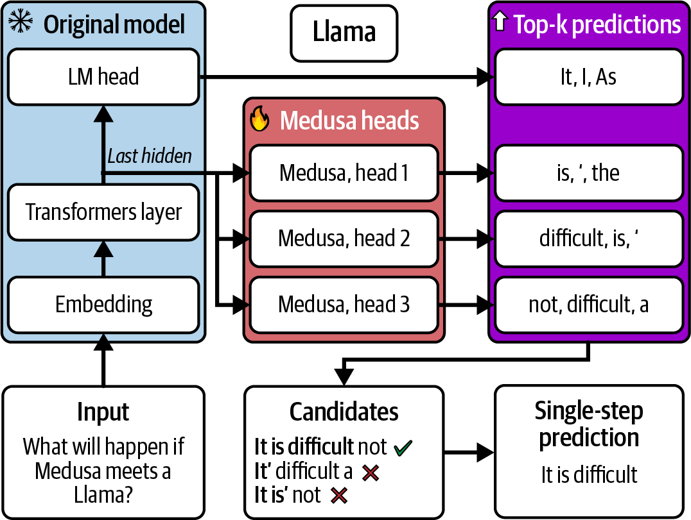
Medusa 内部使用专门的树形注意力模式，提高并行 token 预测之间的一致性。模型学习并发扩展并验证多 token 序列；本质上，LLM 学会提前预测数个 token，并一次性输出。
推理时，Medusa 可以通过并行预测减少顺序解码迭代次数。例如，如果一次预测 4 个 token，对于深度为 2 的二叉树输出，理论上可将所需前向传播次数最多减少到四分之一。
但在实践中，由于预测分支验证失败时偶尔需要回溯并部分重做，Medusa 在相关实验中通常约为 2–3 倍提速。这类似于推测解码的验证和拒绝开销。只有在每次迭代生成的 4 个 token 都被接受的理想情况下，100-token 回复才只需 25 次而非 100 次模型迭代。
Medusa 需要修改并重新训练模型以添加额外解码头。额外头参数也会略微增大模型，增加开发复杂性和训练成本。训练完成后，它可能显著缩短推理时间，但收益取决于接受率和目标负载。
如果针对具体用例完成训练和验证，支持 Medusa 的 LLM 可以提供较好的低延迟性能。不过，该技术要求修改并微调模型架构以添加额外解码头。
另一种并行解码技术是在多个终端用户的并发请求之间交错执行 decode 步骤。这更多是一种推理引擎能力，而非算法技巧或模型架构修改；它通过跨请求进行 token 级批处理，使 GPU 保持忙碌。
vLLM 等框架通过请求路由、连续批处理和 token 调度实现这一机制。其思路是填补顺序步骤之间的空隙，让 GPU 保持忙碌。具体来说，如果某个序列等待 I/O 或数据依赖而停滞，调度器可让同一 GPU 暂时执行另一序列的下一 token 预测。
可将推理引擎的高级路由、批处理和调度能力与 CUDA stream 结合，再用 Nsight Systems 验证 token 步骤内核是否与 NIC/NVLink 传输重叠，而不是在单个 stream 上串行执行。这样可以在应用、系统和硬件层实现大规模并行。
需要注意，交错 decode 步骤不会降低单个序列的延迟；额外上下文切换甚至可能稍微增加每 token 开销。不过，在并发服务大量用户时，它可以显著提高总体吞吐量和 GPU 利用率，并可能降低高负载下的平均请求延迟。
这些解码优化可以组合。例如，可以让支持 Medusa 的 target 模型参与推测解码，由大模型一次验证小模型预测的多个 token。
这些技术也会增加复杂性：需要维护额外模型、修改主模型，或管理更复杂的控制逻辑。生产环境应权衡这种复杂性与性能收益。对于交互式应用，数毫秒的改善是否值得额外复杂性，应结合规模、SLO 和维护成本判断。
总之，无论是否使用独立 draft 模型，推测解码和 Medusa 式多 token 预测等高级技术都可能缩短传统逐 token 自回归 LLM 的总体推理时间。一次生成更多 token 可以提高总体算术强度，使解码步骤更接近计算受限区间，从而更充分利用 GPU 计算能力。
LLM 解码过程另一个独立但重要的方面是在特定约束下生成文本。例如，可以强制输出匹配预定义格式（JSON）、遵循特定语法，或出于安全考虑禁止某些序列。因此，约束解码（通常称为结构化输出）经常是生产用例的必要能力。
例如，OpenAI 的 function-calling API 依赖结构良好的输出格式来确定要调用的函数及其输入和输出。这些约束必须匹配函数 API 签名，在应用层面不可协商。
约束解码会改变模型的 token 选择过程，使每一步只允许有效 token。实现可以很简单，例如提供允许 token 列表；也可以很复杂，例如嵌入形式化语法，并使用状态机过滤无效 token。
约束解码的缺点是强制执行约束需要额外延迟。朴素实现可能每 token 增加数毫秒，而优化的语法掩码引擎可以显著降低成本；确切开销取决于运行时、语法结构和实现路径。回溯发生在 LLM 生成循环内部，因此若缺少细粒度遥测，调试、分析和调优会比较困难。
另一个性能因素是缓存效率。每个 decode 步骤都裁剪完整概率分布，可能冲刷缓存并进一步降低吞吐量；允许 token 集合受到严格限制时尤为明显。
为缓解这些成本，许多框架会编译 JSON 语法，并为每个状态预计算有效 token，使推理引擎能够在运行时屏蔽无效 softmax 输出。这种方法可减少回溯、改善缓存并提高接受率。
对于简单 JSON schema 等中等约束，使用编译语法并将掩码计算与 GPU 执行重叠的现代引擎，在大规模场景中可能将开销压低到个位数百分比；但复杂语法或小批次仍可能产生两位数百分比开销。务必在实际 schema 下测量 TTFT 和每秒 token 数。
这些技术已在 Hugging Face Transformers、NVIDIA NeMo 和 vLLM 等常用库及推理引擎中实现。例如，TensorRT-LLM 和 Hugging Face Transformers 支持用户定义词表 mask 来实施约束。TensorRT-LLM 通过 XGrammar 后端提供支持 JSON schema 和上下文无关语法（CFG）的 guided decoding；vLLM 和 Transformers 也提供结构化输出 API。性能开销取决于后端和约束，不能一概视为可忽略。
使用 TensorRT-LLM guided decoding 时，XGrammar 提供 JSON schema 和 CFG 支持，并可将部分约束处理放在 GPU 路径中。XGrammar 会编译约束，避免较大的 Python 侧 token-mask 开销。但某些配置可能回退到较慢后端，导致首次请求明显停顿。因此，应尽量保持语法紧凑，以维护缓存局部性和 token-mask 带宽。
另一种常见策略是将约束解码下沉到内核中，在最终 softmax 步骤注入 token mask，以获得类似的性能收益。
高效实现时，约束解码通常可以接近无约束解码的速度，尤其当约束规则集不太大或不太严格时。如果约束过于严格，解码实际上会变成在小型 token 空间中的搜索，导致更多回溯和更慢的 token 生成。
可能时应避免过大或过于严格的约束，包括复杂语法、格式和词表。一种选择是让 LLM 正常解码，再对输出执行后处理或过滤；但这并不总是高性能或可行。应分析不同方案，选择最适合具体用例的方案。
要高效服务 MoE 模型，需要使用专家并行，将专家仔细划分到多个 GPU。此外，还需要智能、动态的机制（即门控网络），在运行时将 token 动态路由到这些专家。
MoE 推理期间，每个 token 的前向传播都必须由门控网络路由到一个或多个专家 GPU。系统需要以均衡方式处理通信，使 GPU 保持忙碌并避免 GPU 过载或出现热点。下面讨论在大规模多节点推理环境中处理这些问题的方法。
在专家之间执行 token 激活的 all-to-all 交换时，MoE 会在 GPU 之间重排一批 token。每个 GPU 只接收发往其承载专家的 token，如图 15-11所示。该操作发生在 MoE 的每一层，成本很高；如果处理不当，可能占据大部分推理时间。
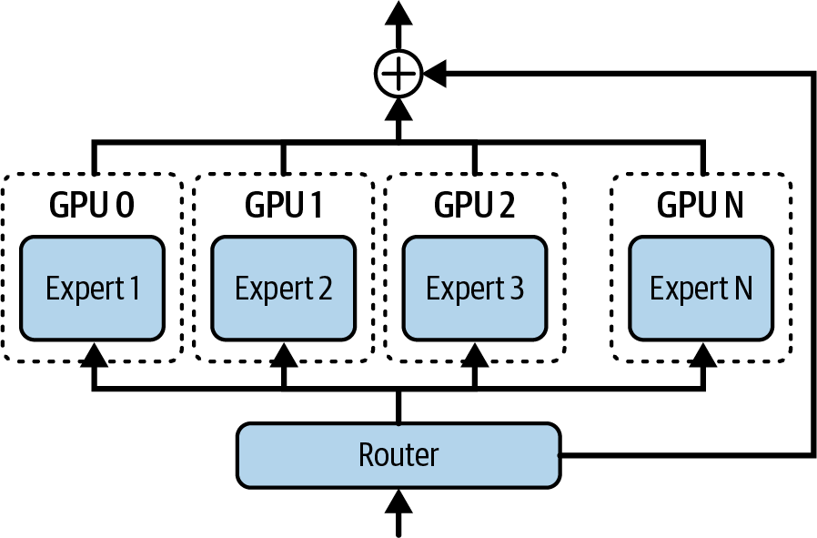
降低通信开销的一种方法是对 GPU 集群采用分层路由：先通过高速 NVSwitch/NVLink 在同一节点内的 GPU 之间路由 token，只有需要非本地专家的剩余 token 才跨节点路由。这种两阶段 all-to-all 可以减少节点间流量。
还可以采用异步通信，将通信与计算重叠。高性能 MoE 推理服务器使用双缓冲通信：发送当前一批 token 的同时，并行执行上一批 token 的专家计算。该流水线可以隐藏大量通信延迟。
如果节点间网络保持充分利用，同时节点内重排在后台运行，all-to-all 完成时间可能接近相应拓扑的最佳水平。务必同时测量节点间 NIC 和节点内 NVLink 路径的链路利用率。
使用单个全局 all-to-all 屏障的朴素专家路由实现，可能让 GPU 等待同步；如果并非所有链路都得到充分利用，还会浪费带宽。
蝶形调度（也称错位 all-to-all 调度）等技术可以将通信拆成多个阶段轮次，使各 NVLink/NIC 执行部分交换，而不是等待一次大型同步。这种错峰方法可提高链路利用率并减少空闲时间。
All-to-all 交换可以使用内置 ncclAllToAll 集合操作，或分组 send/receive 调用。将交换分块并流水化，或跨节点使用蝶形等分层调度，通常可以提高吞吐量。应通过验证选择与拓扑匹配的算法。
第一阶段 all-to-all 尽量保留在机架内（NVLink），仅让剩余 token 溢出到机架间。分析链路利用率，确认 NVLink 在后台重排时 NIC 得到充分利用。当节点间链路成为瓶颈时，建议对 MoE all-to-all 通信和专家计算采用双缓冲。分块/流水化交换以及蝶形/错位调度可避免全局屏障减速；是否优于全局集合操作必须按拓扑实测。
减少通信流量的另一种方案称为专家共置：将某些专家放在同一 GPU 或节点上，避免不必要的通信。假设 token 路由器经常为同一 token 激活专家 5 和专家 7，将二者放在同一 GPU 上即可消除一次额外 all-to-all 跳转。性能分析工具和门控频率分析可帮助识别适合具体负载的专家配对。
还可以压缩专家间通信，包括专家交换的激活。例如，在执行 all-to-all 前，使用 NVIDIA Transformer Engine 将激活转换为 FP8 或 NVFP4。这样可降低 NIC 负载，但需要承担转换、打包/解包开销，并可能损失数值精度。只有当节省的网络和内存传输成本超过压缩计算成本时才有收益，应验证精度与性能。
总之，优化 MoE 通信需要分析硬件和网络拓扑，并据此优化专家在 GPU 上的放置。部署时应配置集群互连，以高效执行 all-to-all。例如，可利用 NVL72 机架的 NVLink Switch mesh，在单个域内连接最多 72 个 GPU。朴素的 all-to-all 选择可能占据大部分层执行时间，并造成很低的 SM 效率。应优先处理专家流量，尽可能实现重叠，并在选择不同互连和通信算法时进行分析与验证。
应尽量让每位专家和每个 GPU 获得较均衡的工作量，避免“热点”。如果 MoE 门控网络将不成比例的 token 路由到某位专家，承载它的 GPU 就会过载，增加延迟并降低系统总体吞吐量。
例如，某个专家 GPU 成为热点，利用率达到 99%，而其他专家 GPU 平均约为 60%。如果处理不当，这个热点就可能成为整个训练或推理集群的瓶颈。
训练期间，可以添加负载均衡损失项来缓解热点：如果门控过度使用某些专家而很少使用其他专家，就施加惩罚，使训练后的 MoE 倾向于在专家之间更均匀地分配 token。
但在推理时，特定输入 prompt 或主题仍可能集中激活一小部分“热门”专家，造成失衡。避免推理热点的一种策略是使用 capacity factor 触发溢出机制。
通过指定 capacity factor，可以限制每位专家在给定时刻最多处理的 token 数量（例如 32 个）。如果收到的 token 超过容量，额外 token 可以转发给路由分数次高的后备专家，或串行排队，在第二轮处理。图 15-12比较了 1.0 与 1.5 两种 capacity factor。
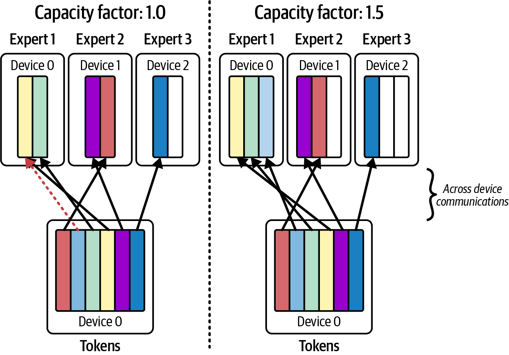
实践中，top-2 门控常使用约 1.2 的 capacity factor（允许比平均负载高 20%）。这表示每位专家最多接收其平均负载的 120%，超出部分发送给下一位专家，从而平滑系统内的专家负载。该值只是常见起点，应按模型和负载调优。
避免热点的另一种策略是专家复制。如果某位专家持续成为热点，系统可将其复制到另一个 GPU，让门控函数把一部分 token 发送给运行在另一 GPU 上的专家副本。
副本是由推理引擎实现的应用层优化，模型本身并不知道它们。具体引擎可能维护原专家到多个物理副本的映射并据负载分流；原文称将副本注册为具有独立索引的专家，但这不是所有实现的通用方式。
复制专家会增加相应专家的内存占用和成本。不过，通常只有少数专家会过载，因此只复制少量热门专家是一种针对性修复，无需复制整个模型和所有专家。
如果模型会更新，复制还需要谨慎同步，确保所有专家副本保持一致（例如权重相同）；否则，相同逻辑专家的不同物理副本可能产生不一致输出。
通常，副本与原模型从同一 checkpoint 加载，且不会独立更新，从而防止原专家与副本发生分歧。
传统 MoE 专家门控在训练后固定；自适应路由则可以在推理期间实时调整门控决策，以响应当前系统状况和专家负载。例如，如果检测到某个专家 GPU 落后，系统可指示门控函数将部分 token 转移到另一位有可用容量、但路由分数略低的专家。
应持续监控每位专家的利用率和响应延迟。现代 MoE 系统可与遥测框架集成，让每位专家向 Prometheus/Grafana 输出利用率指标，使系统能够动态调整 capacity factor 或门控算法。
大多数 LLM 专家门控函数只考虑训练时确定的路由分数；真正的自适应系统则需要由推理引擎处理，并在推理时动态执行。
要实现自适应路由，推理引擎需要用自定义逻辑包装模型前向传播。例如，它可以截获门控 softmax，并依据当前负载指标将部分 token 重新分配给其他专家。
推理引擎依赖每 GPU 利用率、每专家 token 数量等实时指标持续测量专家负载。如果某位专家的 GPU 利用率达到 99%，而其他专家 GPU 约为 60%，系统可以暂时将部分 token 路由到该专家的副本，或偏好分数略低的其他专家，以降低其负载。
图 15-13展示了一种采用偏置门控分数的自适应 MoE 路由策略。该方法最初用于训练场景，但其简化形式也可用于推理：当主要专家负载很高时，利用修改后的专家偏置算法将 token 转移给备选专家。
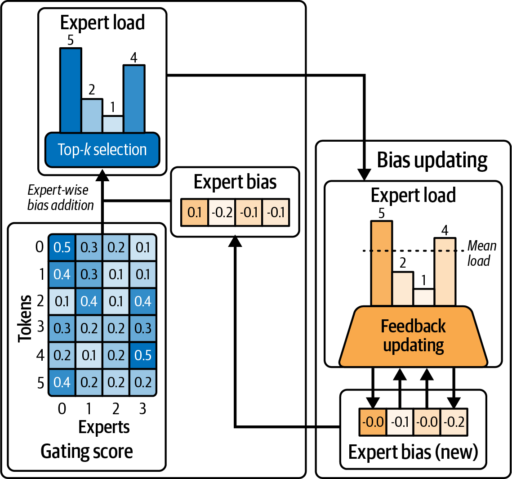
这种方法可以减少不必要的通信，并更均匀地平衡负载；但额外监控、决策、实现复杂性、配置管理和日志记录也会产生成本。收益是否超过成本取决于具体场景和负载，需要实验评估。
使用 Nsight Systems 等工具分析时，应监控专家 GPU 的 all-to-all 通信时间线。如果某个 GPU 的时间线片段明显更长，它可能正在处理更多 token，也可能受到链路或同步拖尾影响，需要结合计数器确认。
推理系统可利用这些信息调整专家门控概率，并将专家动态重新分配到不同 GPU；也可以创建额外专家副本。通过调整门控算法、修改专家放置或创建/移除副本，可以重新平衡负载。
在推理时动态创建新专家副本并不简单，需要预留容量，或具备快速加载专家权重的能力。这是一项高级优化技术。
调整专家在 GPU 上的分组方式，可能使 token 路由更均匀，并因并行性改善而提高总体吞吐量，因为各 GPU 可以更同步地完成每层工作。如果检测到持续失衡，现代 MoE 调度器可调整 capacity factor，并在具备预留资源和相应运行时支持时调度额外专家副本，以缓解门控不均造成的热点。
应记录系统做出的所有动态更改，并为特定专家利用率超过阈值设置告警；例如可从 80% 开始，但阈值应根据硬件、队列和 SLO 调整。
动态路由策略有两个核心目标：降低路由开销，并在专家 GPU 之间均匀分配工作。低开销依赖高带宽互连、数据传输与计算重叠，以及通过共置和智能调度减少冗余数据移动。
负载均衡可以通过简单的 top-1/top-2 门控、更高级的容量感知门控、动态复制和专家重新分配实现。通常会组合使用这些技术，让 GPU 尽可能用于计算并减少通信等待。
当路由开销足够低且负载均衡良好时，自适应 MoE 推理系统可能随着专家数量增加而接近线性扩展吞吐量。例如，GPU 数量翻倍时，推理吞吐量在有利条件下可能接近翻倍，但会受到通信、内存带宽和负载偏斜限制。
总之，这些自适应专家路由和负载均衡优化可以与前面介绍的并行及解码技术集成，从而调优超大规模 MoE 推理系统。持续性能分析和自适应算法有助于让 GPU 保持计算繁忙，减少等待通信时的空闲。
要为数十亿终端用户服务超大规模 LLM，需要优化推理流水线的每个阶段。下面是本章的关键要点：
将 prompt prefill 和 decode 阶段拆分到独立 GPU 池可以消除直接干扰，使系统有机会同时获得较低首 token 时间和较高每秒 token 数，而不必在两者之间简单取舍。这是大规模 LLM 服务的基础技术之一。
对于数万亿参数模型，单一并行策略通常不足。应按需组合张量、流水线、专家和数据并行。例如，通过 TP/PP 在 GPU 之间分片层，使模型装入内存；为 MoE 层使用专家并行以扩展模型容量；再添加数据并行副本满足吞吐量需求。最佳组合取决于硬件，必须针对实际负载分析并调优配置。
高级解码方法可以显著加速生成。在针对任务调优接受率后，快速 draft 模型的双模型推测解码在部分场景中约有 2–3 倍提速。EAGLE 系列和 Medusa 也在特定论文评测中报告了更高结果。这些技术提高 token 级并行性和算术强度；在采用标准接受/校正算法且采样设置一致时，可保持 target 模型输出分布。性能和质量必须在目标负载上验证。
生产环境常要求 LLM 遵循严格格式或避开某些 token。约束解码可在生成期间强制执行 JSON schema、禁用词等规则。它会增加每 token 开销，但编译语法和优化掩码路径可降低成本；复杂语法或小批次可能开销更高。务必测试实际约束对性能的影响，并尽可能避免造成大量回溯的过度严格规则。
混合专家模型的容量可以随 GPU/专家数量扩展，但前提是高效处理路由。使用高带宽互连和分层 all-to-all 通信减少网络瓶颈；通过容量限制和适当的门控策略让各专家获得较均衡的工作量，避免拖尾专家；对持续热门的专家进行复制以分摊负载。调优良好的 MoE 推理系统可能随着 GPU 增加而接近线性扩展吞吐量，但仍受通信与负载偏斜限制。
现代 GPU 硬件为这些并行和分布式推理方法提供支持。应使用能够充分利用硬件与拓扑的软件，例如 vLLM、SGLang 和 NVIDIA Dynamo 等推理引擎。根据硬件优势设计策略：节点内通信尽量走 NVSwitch，跨节点时使用 InfiniBand，并将通信与计算重叠。实际开销取决于配置，需通过分析验证延迟和成本效率。
每项优化都会增加系统复杂性。推测解码和自适应 MoE 路由可能显著提高性能，但需要额外模型或复杂逻辑，因此必须权衡成本。应从最大的瓶颈入手，例如消除 prefill/decode 干扰，再按需逐步增加复杂性。通过监控和性能分析判断哪些优化能够带来最佳投资回报，而不要预设某个提速倍数必然值得实施。
将解耦式 prefill/decode 流水线、多 token 推测解码、动态专家路由和自适应编排结合起来，可以减少资源争用，并为实时 LLM 服务降低延迟。
vLLM、SGLang 和 NVIDIA Dynamo 等现代推理服务平台采用了其中许多优化，包括分配集群资源、跨节点协调 KV cache、实现推测解码与约束解码，以及调度 prefill/decode 任务等。
关键在于构建端到端、可适应变化的架构，将算法创新与高性能硬件能力相匹配。接下来的几章将进一步讨论模型推理性能优化，包括动态、自适应和多节点服务策略。
内容涵盖应用层的前缀缓存、延迟感知请求路由、基于强化学习（RL）的集群调优，以及系统层的自适应内存分配、精度切换和拥塞感知资源调度。